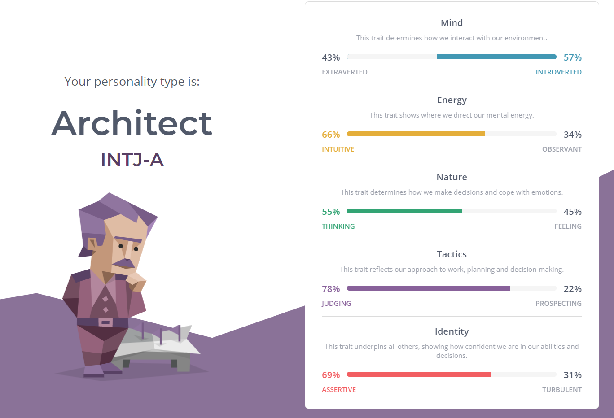
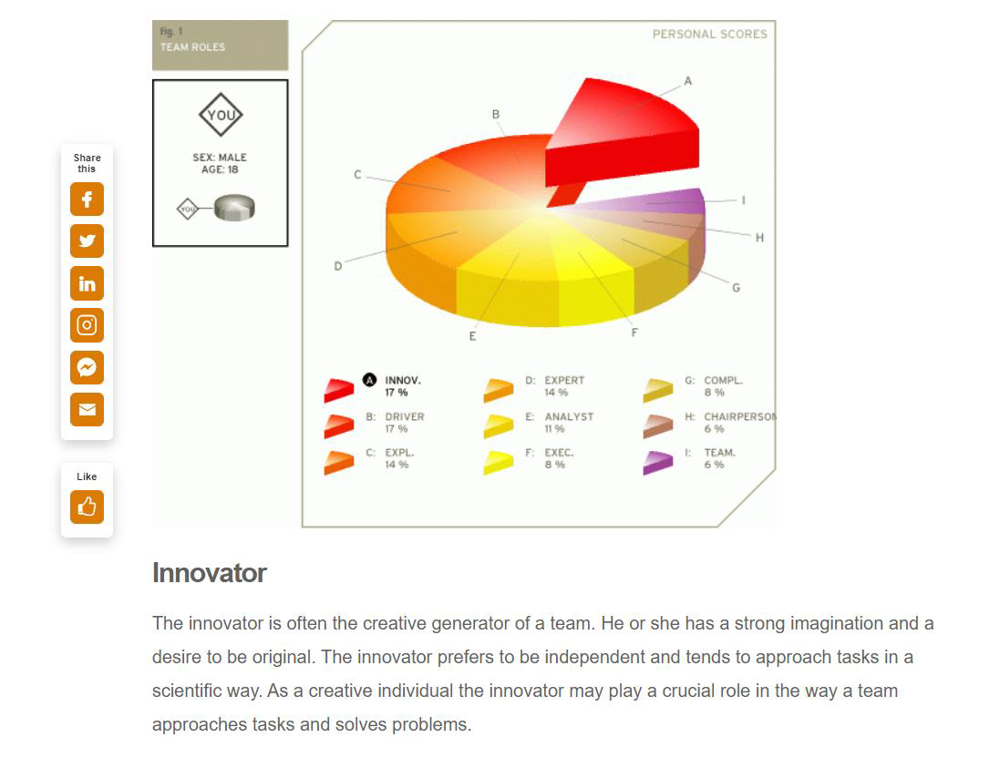

Name: Nguyen Vo Dang Khoa
DOB: 19/8/2003
RMIT Student ID: s3929602
Learning Style
Personal Information
I was born in Ho Chi Minh City on 19th of August 2003. Being raised as a middle child in a middle-class family has taught me numerous valuable lessons, one of which is to always be curious. My parents told me to always be curious, to ask questions, to try out new things because that’s how we learn new things every day. They also taught me not only to take good care of my mental – hygiene but also to nourish my physical health. Therefore, I tend to participate in sports events, especially at the basketball court and the gym. I also played games with my brother in the past. I believe that I am a hard – working and energetic person, hence it is quite suitable for the IT environment. Since I was a little kid, me and my brother used to play games together. We had an amazing childhood full of joy and laughter. Hence, creating games that would bring people the same experiences we had as children was always my dream. As the technology environment gradually grows, more and more people join the industry which triggers my curiosity in learning about this subject. Coding is the basis in developing a great video game, therefore I believe RMIT is the right university to help me with my first step in achieving my dream. During the course, I expect to acquire the knowledge of the future as well as meeting new people sharing the same hobbies so that we could share the experiences we’ve been through.Individual selected test
I’m an Architect (INTJ) as the result from Myers - Briggs personality test given out. According to the description of “16 Personalities”, an architect is a person with the Introverted, Intuitive, Thinking, and Judging personality traits. Accurately, tacticians like me love perfecting the details of life, applying creativity and rationality to everything that I do. Moreover, my inner world is often private and complex. Moving onto the “Learning Style” test, it describes myself as a visual and tactile learner, which is learning by seeing and hands-on projects. For example, chewing gum, walking around, or drawing pictures might innovate my mind and let out some steam while I’m struggling. By doing the third test, team role, I found out that the innovator role suited me best. Instead of getting things done, I prefer to plan out ways to tackle the problem in a most scientific way and contribute ideas in problem solving.
 Tran Nam Thai
Khoa is a man of few words. He does not talk much in the group chat but he always finishes his work portion on time which is crucial when working in a team. I appreciated that Khoa has done more work with Ha in writing in order to free up some time for me to work on the website.Khoa also has good artistic eyes. He gave me feedback on how the website layout should be, how some colors may go well with others.
Tang Minh Tri
Khoa is a mysterious teammate. I was assigned to write the team profile, when I came across his personality test, Khoa’s results surprised as the results told a different story from how he behaved in reality. However, being taciturn didn’t hide his amazing ability. He always finishes his works on time with an artistic layout, so we took his work as an example to refine along.
Bui Viet Ha
Although I have just met Khoa once in class, I believe that Khoa is a great member for every team due to his hard-working characteristic. Same to me, Khoa hasn’t had much experience in the website coding/making field, but that doesn’t stop Khoa from contributing a lot to our project. He agreed to do more work in writing so that Thai and Tri can save more time to invest in web designing, that is what I respect the most.
Personally
Even though I contributed some writing for Tran Nam Thai, I believe I did too little work because I joined the group late. In addition, I can see that I know far less in IT than Thai. As a result, I'm hoping that after this project, I'll be able to learn more about web design and enhance my skills in preparation for the next one.